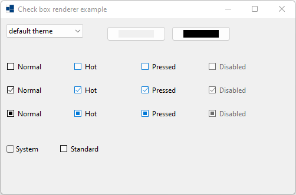
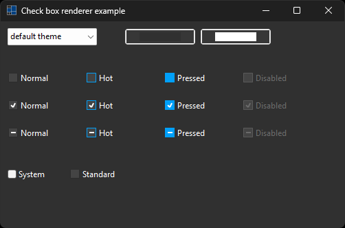
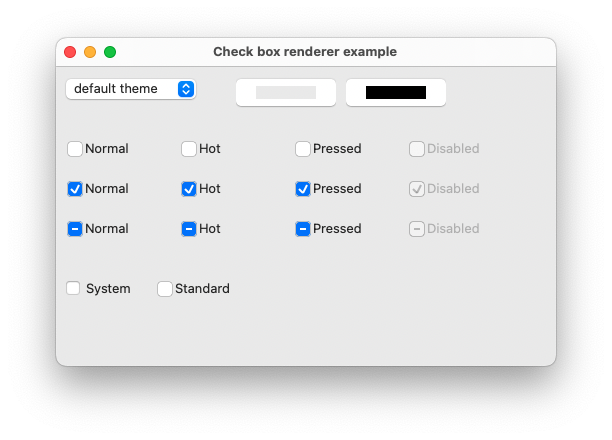
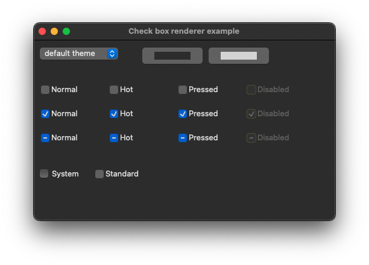
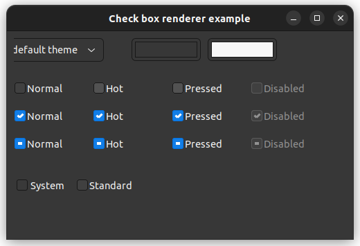

|
xtd
0.2.0
|
Loading...
Searching...
No Matches
check_box_renderer.cpp
demonstrates the use of xtd::forms::check_box_renderer control.
- Windows
- 

- macOS
- 

- Gnome


#include <xtd/forms/application>
#include <xtd/forms/check_box>
#include <xtd/forms/check_box_renderer>
#include <xtd/forms/choice>
#include <xtd/forms/color_picker>
#include <xtd/forms/form>
#include <xtd/cdebug>
using namespace std;
using namespace xtd;
using namespace xtd::drawing;
using namespace xtd::forms;
namespace check_box_renderer_example {
public:
form1() {
text("Check box renderer example");
client_size({500, 300});
set_color(color::blue);
set_color(nullptr);
choice_theme.parent(*this);
choice_theme.location({10, 10});
choice_theme.items().push_back("default theme");
auto names = application::style_sheet_names();
sort(names.begin(), names.end());
choice_theme.items().push_back_range(names);
choice_theme.selected_index(0);
choice_theme.selected_index_changed += [&] {
application::style_sheet(choice_theme.selected_index() == 0 ? application::system_style_sheet() : application::get_style_sheet_from_name(choice_theme.selected_item().value()));
color_picker_background.color(back_color());
color_picker_foreground.color(fore_color());
bcolor.reset();
fcolor.reset();
check_box_system.back_color(nullptr);
check_box_system.fore_color(nullptr);
check_box_standard.back_color(nullptr);
check_box_standard.fore_color(nullptr);
};
color_picker_background.parent(*this);
color_picker_background.location({180, 10});
color_picker_background.color(back_color());
color_picker_background.color_picker_changed += [&] {
bcolor = color_picker_background.color();
check_box_system.back_color(bcolor.value());
check_box_standard.back_color(bcolor.value());
};
color_picker_foreground.parent(*this);
color_picker_foreground.location({290, 10});
color_picker_foreground.color(fore_color());
color_picker_foreground.color_picker_changed += [&] {
fcolor = color_picker_foreground.color();
check_box_system.fore_color(fcolor.value());
check_box_standard.fore_color(fcolor.value());
};
check_box_system.parent(*this);
check_box_system.flat_style(xtd::forms::flat_style::system);
check_box_system.location({10, 210});
check_box_system.text("System");
check_box_system.three_state(true);
check_box_standard.parent(*this);
check_box_standard.location({100, 210});
check_box_standard.text("Standard");
check_box_standard.three_state(true);
}
protected:
form::on_paint(e);
check_box_renderer::draw_check_box(e.graphics(), {10, 70, 104, 25}, "Normal", font(), xtd::forms::text_format_flags::vertical_center | xtd::forms::text_format_flags::left, xtd::drawing::image::empty, {0, 0, 0, 0}, false, xtd::forms::visual_styles::check_box_state::unchecked_normal, bcolor, fcolor);
check_box_renderer::draw_check_box(e.graphics(), {124, 70, 104, 25}, "Hot", font(), xtd::forms::text_format_flags::vertical_center | xtd::forms::text_format_flags::left, xtd::drawing::image::empty, {0, 0, 0, 0}, false, xtd::forms::visual_styles::check_box_state::unchecked_hot, bcolor, fcolor);
check_box_renderer::draw_check_box(e.graphics(), {238, 70, 104, 25}, "Pressed", font(), xtd::forms::text_format_flags::vertical_center | xtd::forms::text_format_flags::left, xtd::drawing::image::empty, {0, 0, 0, 0}, false, xtd::forms::visual_styles::check_box_state::unchecked_pressed, bcolor, fcolor);
check_box_renderer::draw_check_box(e.graphics(), {352, 70, 104, 25}, "Disabled", font(), xtd::forms::text_format_flags::vertical_center | xtd::forms::text_format_flags::left, xtd::drawing::image::empty, {0, 0, 0, 0}, false, xtd::forms::visual_styles::check_box_state::unchecked_disabled, bcolor, fcolor);
check_box_renderer::draw_check_box(e.graphics(), {10, 110, 104, 25}, "Normal", font(), xtd::forms::text_format_flags::vertical_center | xtd::forms::text_format_flags::left, xtd::drawing::image::empty, {0, 0, 0, 0}, false, xtd::forms::visual_styles::check_box_state::checked_normal, bcolor, fcolor);
check_box_renderer::draw_check_box(e.graphics(), {124, 110, 104, 25}, "Hot", font(), xtd::forms::text_format_flags::vertical_center | xtd::forms::text_format_flags::left, xtd::drawing::image::empty, {0, 0, 0, 0}, false, xtd::forms::visual_styles::check_box_state::checked_hot, bcolor, fcolor);
check_box_renderer::draw_check_box(e.graphics(), {238, 110, 104, 25}, "Pressed", font(), xtd::forms::text_format_flags::vertical_center | xtd::forms::text_format_flags::left, xtd::drawing::image::empty, {0, 0, 0, 0}, false, xtd::forms::visual_styles::check_box_state::checked_pressed, bcolor, fcolor);
check_box_renderer::draw_check_box(e.graphics(), {352, 110, 104, 25}, "Disabled", font(), xtd::forms::text_format_flags::vertical_center | xtd::forms::text_format_flags::left, xtd::drawing::image::empty, {0, 0, 0, 0}, false, xtd::forms::visual_styles::check_box_state::checked_disabled, bcolor, fcolor);
check_box_renderer::draw_check_box(e.graphics(), {10, 150, 104, 25}, "Normal", font(), xtd::forms::text_format_flags::vertical_center | xtd::forms::text_format_flags::left, xtd::drawing::image::empty, {0, 0, 0, 0}, false, xtd::forms::visual_styles::check_box_state::mixed_normal, bcolor, fcolor);
check_box_renderer::draw_check_box(e.graphics(), {124, 150, 104, 25}, "Hot", font(), xtd::forms::text_format_flags::vertical_center | xtd::forms::text_format_flags::left, xtd::drawing::image::empty, {0, 0, 0, 0}, false, xtd::forms::visual_styles::check_box_state::mixed_hot, bcolor, fcolor);
check_box_renderer::draw_check_box(e.graphics(), {238, 150, 104, 25}, "Pressed", font(), xtd::forms::text_format_flags::vertical_center | xtd::forms::text_format_flags::left, xtd::drawing::image::empty, {0, 0, 0, 0}, false, xtd::forms::visual_styles::check_box_state::mixed_pressed, bcolor, fcolor);
check_box_renderer::draw_check_box(e.graphics(), {352, 150, 104, 25}, "Disabled", font(), xtd::forms::text_format_flags::vertical_center | xtd::forms::text_format_flags::left, xtd::drawing::image::empty, {0, 0, 0, 0}, false, xtd::forms::visual_styles::check_box_state::mixed_disabled, bcolor, fcolor);
}
private:
}
void set_color(nullptr_t) {
cdebug << "color = (nullptr)" << endl;
}
optional<color> bcolor;
optional<color> fcolor;
choice choice_theme;
color_picker color_picker_background;
color_picker color_picker_foreground;
check_box check_box_system;
check_box check_box_standard;
};
}
auto main()->int {
application::run(check_box_renderer_example::form1 {});
}
xtd::ustring to_string() const noexcept override
Creates a human-readable string that represents this color class.
Defines a particular format for text, including font face, size, and style attributes....
Definition font.h:45
static image empty
Represent an empty xtd::drawing::image.
Definition image.h:65
Represents a picker control that displays available colors along with controls that enable the user t...
Definition color_picker.h:30
Represents a window or dialog box that makes up an application's user interface.
Definition form.h:52
Provides data for the xtd::forms::control::paint event.
Definition paint_event_args.h:28
@ vertical_center
Centers the text vertically, within the bounding rectangle.
@ left
Aligns the text on the left side of the clipping area. This is the default.
@ mixed_pressed
The check box is three-state and pressed.
@ unchecked_normal
The check box is unchecked.
@ checked_disabled
The check box is checked and disabled.
@ unchecked_pressed
The check box is unchecked and pressed.
@ mixed_hot
The check box is three-state and hot.
@ checked_hot
The check box is checked and hot.
@ unchecked_hot
The check box is unchecked and hot.
@ unchecked_disabled
The check box is unchecked and disabled.
@ checked_pressed
The check box is checked and pressed.
@ mixed_disabled
The check box is three-state and disabled.
@ system
The appearance of the control is determined by the user's operating system.
The xtd::drawing namespace provides access to GDI+ basic graphics functionality. More advanced functi...
Definition actions_system_images.h:11
The xtd::forms namespace contains classes for creating Windows-based applications that take full adva...
Definition xtd_about_box.h:12
The xtd namespace contains all fundamental classes to access Hardware, Os, System,...
Definition xtd_about_box.h:10
Generated on Sat May 11 2024 21:12:11 for xtd by Gammasoft. All rights reserved.